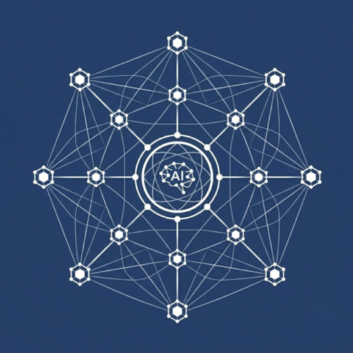

macOS
Run AI agents. Locally. Instantly.
A lightweight menu bar app for macOS that connects to any ACP-compatible local AI agent. Summon with a hotkey, stream responses in real time, and stay in full control.
Free and open source. MIT License.
Features
Designed to be fast, unobtrusive, and fully under your control.
Lives in your menu bar. Zero clutter. Press ⌥ Space to summon instantly — or customize the hotkey to whatever you prefer.
Responses appear character by character — no buffering. Bypasses standard I/O blocking so you see every token as the agent generates it.
Full Agent Communication Protocol support over stdin/stdout JSON-RPC 2.0. Works with Hermes Agent and any ACP-compatible backend.
When an agent wants to run commands or edit files, you get an interactive approval card right in the chat. Approve or deny with one click.
Sidebar with multiple independent chat sessions. All conversations persist locally — clear, reload, or delete anytime.
Beautiful code rendering with Highlightr.js. Markdown, code blocks, blockquotes — all styled with the same polish as the rest of the app.
Protocol
Easy Agent communicates with backend processes over standard I/O using JSON-RPC 2.0. Handshakes, streaming updates, and permission requests — all built in.
Client sends capabilities and protocol version. Agent responds with its supported features.
Creates a workspace session with a working directory. Agent returns a unique session ID.
User prompts flow as session/prompt requests. Agent streams back session/update notifications.
Agent requests tool execution via session/request_permission. User approves or denies inline.
Technology
Built entirely with Apple's native frameworks. No Electron. No web wrappers.
Modern Swift concurrency. Declarative UI with SwiftUI for the main window, settings, and sidebar. AppKit for window management and native glass effects.
Global keyboard shortcuts via Carbon Event Manager. Registered at the OS level so they work from any app.
Agent processes run as NSTask subprocesses. stdin/stdout pipes with PYTHONUNBUFFERED and NSUnbufferedIO for zero-latency streaming.
MIT licensed. Fork it, modify it, build on it. PRs welcome. The whole project is a standard Swift Package Manager project — open with Xcode or VS Code.